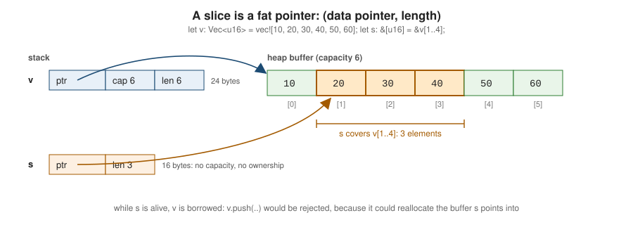

Slices & Dynamically Sized Types
|
This content was generated with the assistance of AI and should be verified against the official documentation before being relied on in production. |
This page is written against Rust 1.99.0 and the 2024 edition, checked on 2026-10-06. A slice is a view into a
contiguous sequence of elements that someone else owns — part of an array, a Vec, a String. Slices are the most
common way to pass sequences to functions, because one &[T] parameter accepts arrays, vectors and sub-ranges of
either. They are also the main example of a dynamically sized type.
Slice types
| Type | Meaning |
|---|---|
|
a sequence of |
|
a shared slice: read access to some elements |
|
a mutable slice: read and write access, but the length cannot change |
|
a UTF-8 string slice, a DST (like |
|
a borrowed string slice; string literals are |
|
owned or shared slices behind a smart pointer |
Source: The Rust Reference: Slice types
You create a slice by borrowing a range of an array, Vec or another slice:
fn average(ratings: &[u8]) -> f64 {
if ratings.is_empty() {
return 0.0;
}
let sum: u32 = ratings.iter().map(|&r| u32::from(r)).sum();
f64::from(sum) / ratings.len() as f64
}
fn main() {
let fixed = [5, 4, 3, 5]; // array [u8; 4]
let growable = vec![2, 3, 4, 5, 5, 1]; // Vec<u8>
println!("{}", average(&fixed)); // &[u8; 4] coerces to &[u8]
println!("{}", average(&growable)); // &Vec<u8> coerces to &[u8]
println!("{}", average(&growable[1..4])); // elements 1, 2, 3
println!("{}", average(&[])); // empty slice
}Source: The Book: The Slice Type
Range indexing and its panics
Indexing with a range produces a slice. The forms mirror range expressions:
| Expression | Elements |
|---|---|
|
from index |
|
from |
|
from |
|
from the start up to |
|
the whole sequence |
Out-of-range bounds, or a start after the end, panic at run time (range end index 9 out of range for slice of
length 6). For input-dependent ranges use get, which returns an Option:
fn main() {
let titles = ["Dune", "Emma", "Kindred", "Beloved", "Ulysses"];
let page_size = 2;
for page in 0..4 {
let start = page * page_size;
match titles.get(start..start + page_size) {
Some(items) => println!("page {page}: {items:?}"),
None => match titles.get(start..) {
Some(rest) if !rest.is_empty() => println!("page {page}: {rest:?} (last)"),
_ => println!("page {page}: empty"),
},
}
}
}
// page 0: ["Dune", "Emma"]
// page 1: ["Kindred", "Beloved"]
// page 2: ["Ulysses"] (last)
// page 3: emptySource: std: slice::chunks
String slices are indexed in bytes and the bounds must fall on UTF-8 character boundaries; &"é"[0..1] panics with
"byte index 1 is not a char boundary". Use char_indices, str::get or is_char_boundary when slicing text that
is not ASCII — see Strings & Text.
Fat pointers and dynamically sized types
Most types are Sized: their size is known at compile time. A dynamically sized type (DST) is one whose size is
only known at run time. Rust has two families of DSTs: slices ([T] and str) and trait objects (dyn Trait).
DSTs cannot be stored in a local variable or passed by value; they always live behind a pointer, and that pointer is
fat — two words wide — carrying the extra information needed to use the value:
-
for a slice: the data pointer and the length;
-
for a trait object: the data pointer and a pointer to the vtable (see Trait Objects & dyn Compatibility).

fn main() {
println!("&u8 {}", size_of::<&u8>()); // 8
println!("&[u8] {}", size_of::<&[u8]>()); // 16: pointer + length
println!("&str {}", size_of::<&str>()); // 16
println!("&[u8; 100] {}", size_of::<&[u8; 100]>()); // 8: the length is in the type
println!("Box<[u8]> {}", size_of::<Box<[u8]>>()); // 16
println!("Vec<u8> {}", size_of::<Vec<u8>>()); // 24: pointer + capacity + length
}Sized and ?Sized
Every generic type parameter has an implicit Sized bound, because the compiler must know how much stack space a
T needs. To accept DSTs as well, relax the bound with ?Sized ("maybe sized") and use T only behind a pointer:
use std::fmt::Display;
fn describe<T: Display + ?Sized>(value: &T) -> String {
format!("<{value}>")
}
fn main() {
println!("{}", describe("a str")); // T = str, a DST
println!("{}", describe(&42)); // T = i32
let boxed: Box<dyn Display> = Box::new(1.5);
println!("{}", describe(boxed.as_ref())); // T = dyn Display, also a DST
}Without ?Sized, describe("a str") would fail with
E0277 ("the size for values of type str cannot be known at
compilation time"). The standard library uses ?Sized widely — Box<T: ?Sized>, AsRef<T: ?Sized>,
Borrow<T: ?Sized> — which is why Box<str> and Rc<[T]> work.
Mutable slices
A &mut [T] allows modifying elements in place, swapping, sorting and filling, but not changing the length (that
needs the owning Vec). Functions that only need to rearrange or update elements should take &mut [T], which
accepts arrays and vectors alike:
fn normalise(ratings: &mut [u8]) {
for r in ratings.iter_mut() {
*r = (*r).clamp(1, 5);
}
}
fn main() {
let mut a = [0, 3, 9];
let mut v = vec![7, 1, 2, 6];
normalise(&mut a);
normalise(&mut v[1..]); // only part of the vector
v.swap(0, 3);
v[..2].fill(0);
println!("{a:?} {v:?}"); // [1, 3, 5] [0, 0, 2, 7]
}Source: std: slice primitive
Slice methods
Slices carry most of the sequence API; Vec and arrays get these methods through deref coercion. The most useful
groups:
| Group | Methods |
|---|---|
Inspecting |
|
Chunking |
|
Splitting |
|
Searching |
|
Sorting |
|
Rearranging |
|
Converting |
|
fn main() {
let ratings = [3, 5, 4, 4, 2, 5, 5];
for chunk in ratings.chunks(3) {
print!("{chunk:?} "); // [3, 5, 4] [4, 2, 5] [5]
}
println!();
let rising = ratings.windows(2).filter(|w| w[1] > w[0]).count();
println!("rising steps: {rising}"); // 2
// array_windows (1.94) yields fixed-size arrays, so patterns work:
let peaks = ratings.array_windows().filter(|[a, b, c]| b > a && b > c).count();
println!("peaks: {peaks}"); // 1 (the 5 at index 1)
let mut sorted = ratings;
sorted.sort_unstable();
println!("{sorted:?}"); // [2, 3, 4, 4, 5, 5, 5]
println!("{:?}", sorted.binary_search(&4)); // Ok(2) or Ok(3)
println!("{:?}", sorted.binary_search(&1)); // Err(0): where it would be inserted
let at_least_4 = sorted.len() - sorted.partition_point(|&r| r < 4);
println!("{at_least_4} ratings >= 4"); // 5
let line = "Dune;Emma;;Kindred";
let parts: Vec<&str> = line.split(';').filter(|p| !p.is_empty()).collect();
println!("{parts:?}"); // ["Dune", "Emma", "Kindred"]
}Source: std: slice::array_windows
Choosing a sort: sort and sort_by_key are stable (equal elements keep their order) and allocate a buffer; the
sort_unstable family is in-place and usually faster. Since Rust 1.81, both detect inconsistent comparison
functions (a cmp that does not implement a total order) and may panic rather than produce a garbage order. To sort
floats, use sort_by(f64::total_cmp).
Arrays, slices and Vec
The three sequence types convert easily:
fn main() {
let array: [u16; 3] = [1965, 1815, 1987];
let slice: &[u16] = &array; // array -> slice (unsizing coercion)
let vec: Vec<u16> = slice.to_vec(); // slice -> Vec (clones the elements)
let back: &[u16] = &vec; // Vec -> slice (deref coercion), also vec.as_slice()
let boxed: Box<[u16]> = vec.clone().into_boxed_slice(); // Vec -> Box<[T]> (drops spare capacity)
let exact: [u16; 3] = back.try_into().expect("exactly 3 elements"); // slice -> array (checked)
let first_two: &[u16; 2] = back[..2].try_into().unwrap(); // slice -> array reference
let from_array: Vec<u16> = Vec::from(array); // array -> Vec
println!("{slice:?} {vec:?} {boxed:?} {exact:?} {first_two:?} {from_array:?}");
}Source: std: array primitive
As a parameter type, prefer &[T] over &Vec<T> and &str over &String: the slice accepts more callers and
costs nothing (Clippy’s ptr_arg lint flags &Vec<T> parameters). Return a Vec<T> or String when the function
creates new data.
Common errors and pitfalls
| Problem | Fix |
|---|---|
panic: |
use |
panic: |
slice strings at boundaries from |
E0277 size of |
put the DST behind a
reference or |
E0502 when pushing while holding a slice |
the slice borrows the
|
|
the slice length does not match |